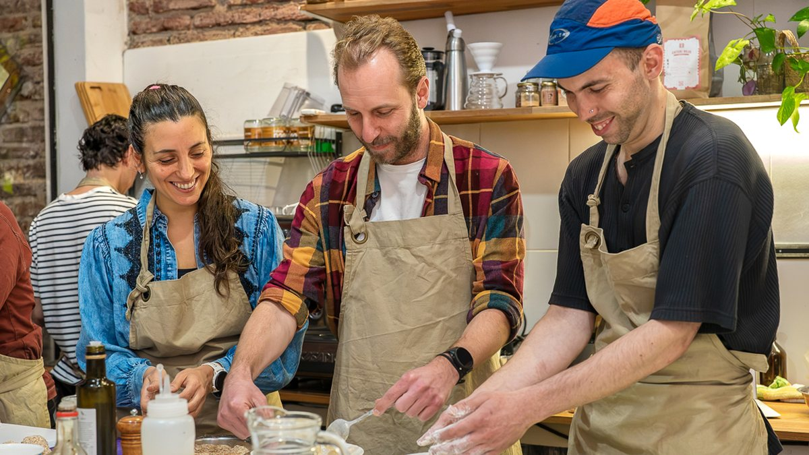
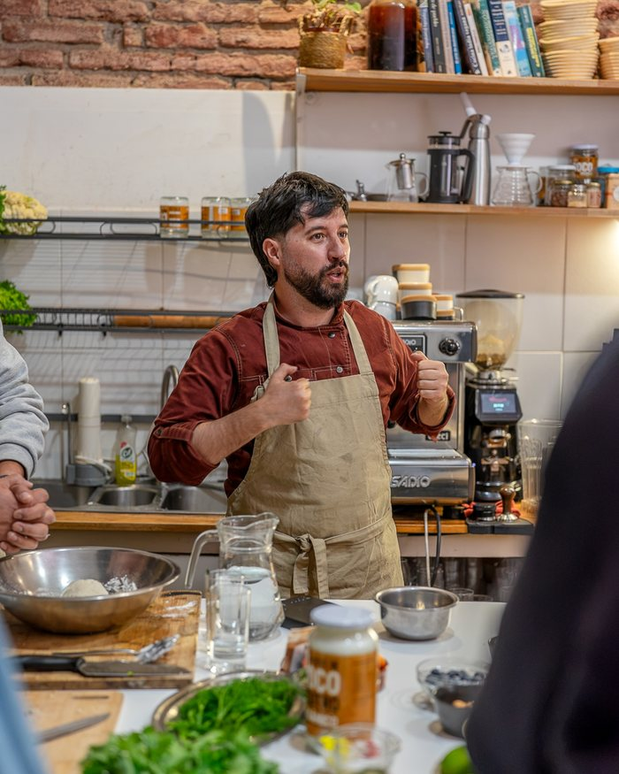

Con qué se arranca
Técnicas de corte y organización · Bases vegetales · Batidos verdes y sopas · Primera fermentación. Es lo que conviene tener resuelto antes de seguir cualquier receta.
Cocinás dulce y salado, sin gluten ni azúcares refinados, y entendés por qué funciona cada cosa.
Clases de cocina vegana y cocina saludable en Parque Rodó, Montevideo: principalmente prácticas, con la base teórica justa para entender los alimentos y sus procesos. Pastas, sushi, postres, chocolates, tartas y platos principales, con el criterio para cocinarlos sin receta.
Aprendés directamente con Leonardo Lemes — 25 años de experiencia culinaria · 13 años enseñando · +1.200 personas formadas.
Precio total bonificado$12.200
3 meses · miércoles y jueves · 12 encuentros, uno por semana
Ahorrás $2.200 pagando el curso completo
Grupos reducidos · te escribimos por WhatsApp en menos de 24h para confirmar tu lugar
Tarjeta hasta 12 cuotas de $1.016 · Transferencia · Abitab · RedPagos · MercadoPago

Tres meses con una progresión clara, en grupos reducidos. No son encuentros sueltos: cada mes se apoya en lo que trabajaste el anterior.
Técnicas de corte y organización · Bases vegetales · Batidos verdes y sopas · Primera fermentación. Es lo que conviene tener resuelto antes de seguir cualquier receta.
Kéfir, kombucha, kimchi · Cocina con hongos · Platos salados complejos · Quesos vegetales · Seguridad alimentaria en fermentaciones. Acá entendés por qué pasa cada cosa, no solo cómo se hace.
Pastelería basada en plantas · Sushi vegetal · Pastas y dal · Menú completo · Recetario final. Es el mes donde comprobás que ya cocinás con criterio propio.
Estos son los contenidos centrales. Se trabajan otras elaboraciones según cómo avanza cada grupo.

El mismo programa en dos horarios. Los grupos son chicos a propósito, para que puedas cocinar, preguntar y que Leonardo te corrija a vos.
Abierto
Miércoles
10:00 a 12:00 h
Arranca el miércoles 7 de octubre
Clase semanal · 12 encuentros. El grupo de mañana, con el estudio tranquilo y luz de día.
Reservar este grupo →Abierto
Jueves
19:00 a 21:00 h
Arranca el jueves 8 de octubre
Clase semanal · 12 encuentros. Para quienes salen de trabajar y quieren cerrar el día cocinando.
Reservar este grupo →
Fundador · Coordina el curso
Chef, docente e investigador gastronómico con 25 años de experiencia y 13 enseñando. Pionero en Uruguay en cocina basada en plantas, fermentación y comprensión científica del alimento.
Participa en el curso
Licenciada en Nutrición y terapeuta nutricional. Articula alimentación, cocina y bienestar desde una mirada integradora que va más allá de los macronutrientes. Desde 2020 acompaña procesos integrando Ayurveda, fitoterapia y nutrición informada en trauma.
★★★★★
«No es un curso de recetas. Es aprender a pensar la cocina de otra manera.»Lucía Fernández · curso de 3 meses
★★★★★
«Lo que más me sorprendió fue entender el porqué de cada técnica. Ahora improviso con lo que hay en casa y me sale bien.»Matías Acevedo · curso de 3 meses
★★★★★
«Excelente lugar para aprender a cocinar y a comer. Es mucho más que una receta, es aprender a crear tus propias recetas de la mano de los que saben.»Alessandra Nadile · reseña en Google
Son 3 meses de cursada, 12 clases semanales por grupo. Elegís entre miércoles de 10:00 a 12:00, que arranca el miércoles 7 de octubre, o jueves de 19:00 a 21:00, que arranca el jueves 8 de octubre.
No. El curso está pensado tanto para quienes recién empiezan como para quienes ya cocinan y quieren profundizar. Arrancamos desde las bases.
Basada en plantas: vegetales, legumbres, hongos, semillas, granos y frutas. No hace falta alimentarse así todos los días: el criterio que desarrollás sirve para cualquier forma de cocinar.
Sí: todo lo que cocinamos en clase es 100% vegetal, sin ingredientes de origen animal, así que también sirve si sos vegetariano o si simplemente querés comer más plantas. Le decimos cocina basada en plantas porque el foco está en la técnica y no en una etiqueta alimentaria. No hace falta que seas vegano, ni que quieras serlo, para hacer el curso.
Las clases se pueden recuperar. Coordinamos para que no pierdas contenido.
Transferencia bancaria (BROU), Abitab, RedPagos y MercadoPago. Con tarjeta hasta 12 cuotas. El total tiene precio bonificado si abonás el curso completo.
Sí. Ingredientes, materiales, degustación y el recetario completo al finalizar. Todo incluido en el precio.
Sí. Al terminar los tres meses te entregamos un certificado del curso.
Sí, y pasa seguido. Tenés dos horarios y te movés entre ellos mientras haya lugar. Si te cambia el trabajo o te surge un viaje, avisanos y te reubicamos: nadie pierde el curso por un cambio de agenda.
Sí, tenemos gift card. Escribinos por WhatsApp y te la armamos.
Si el grupo no se arma, te devolvemos el 100%. Y si el que no puede seguir sos vos, lo primero es buscarte lugar en otro horario, que es como se resuelve casi siempre. La inscripción en sí no se reintegra: los grupos son reducidos y tu lugar queda guardado para vos desde que te anotás.
Los grupos son chicos y las fechas se llenan. Dejanos tu mail y sos de los primeros en enterarte cuando abramos la próxima edición.
Avisame de la próxima edición →Tu mail no se comparte con nadie.
Escribinos por WhatsApp y coordinamos tu lugar: contesta Leonardo, no un formulario.
¿Querés ver todo el contenido clase por clase? El programa completo →
¿Preferís probar antes con algo más corto? La Cena y Taller de Tapeo →
¿Es para regalar? Tenemos gift card →
Precio total bonificado$12.200
3 meses · miércoles y jueves · 12 encuentros, uno por semana
Ahorrás $2.200 pagando el curso completo
Maldonado 1976 esq. Blanes · Parque Rodó · Cómo llegar →